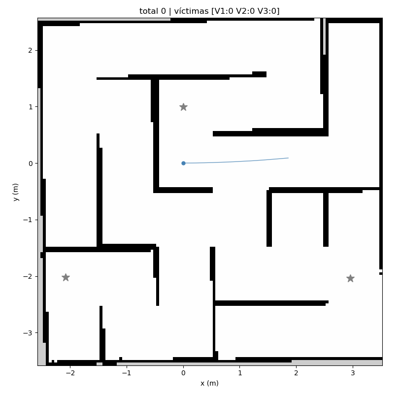

total 0 | víctimas [V1:0 V2:0 V3:0] · fin: inmovil ·
60.9 s · CI en rojo: no entra a la tabla

| Víctima | Puntos | Distancia (m) | Reporte # |
|---|---|---|---|
| V1 | 0 | - | - |
| V2 | 0 | - | - |
| V3 | 0 | - | - |
PR #5 ·
corrida del CI y artefactos
(los artefactos duran 14 días) · commit c0e6548